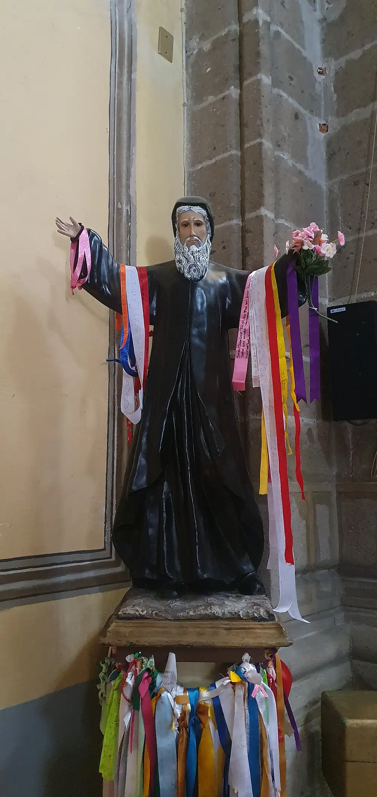

A Prayer to Saint Charbel for Addiction
Addiction imprisons two kinds of people: the one who has it and the ones who love them. Both come to Saint Charbel - the hermit who mastered his own appetites for twenty-three years, and who knows what daily victory costs. A prayer for yourself or for someone you love.

Why the Hermit for This Fight
Addiction is appetite turned against its owner. Saint Charbel's whole life was the opposite movement: year after year he brought hunger, cold, and every bodily craving under the rule of something he loved more. Not once, as a gesture - daily, as a discipline, for twenty-three years. He never called it willpower; he called it grace. That is why people fighting addiction, and the families fighting alongside them, ask for his intercession: he knows the cost of one day at a time, and he knows where the strength for it actually comes from.
A Prayer to Saint Charbel for Addiction
This prayer is an original composition of this website, written in the tradition of the Church's prayers of intercession. Pray it for yourself, or put a name in it and pray it for someone you love:
"Saint Charbel, you ruled your appetites for twenty-three years, not by pride but by grace - so you understand this chain and you understand the only key. I bring you (name yourself or your loved one), who is fighting something stronger than willpower. Ask the Lord for one sober day, and then tomorrow ask Him again. Ask Him for honesty when we hide, for humility when we fall, for the courage to take help when it is offered. Break what we cannot break, hermit of Annaya, and hold what we cannot hold. Amen."
A Short Prayer for the Moment of Craving
For the hour when the fight is loudest. Also an original composition of this website:
"Saint Charbel, stand with me now. I only have to win this hour. Ask God for this hour's strength - I will ask for tomorrow's tomorrow. Amen."
For the Ones Who Love Them
If you are praying for a child, a spouse, a parent, a friend: your prayer matters, and so do your boundaries. Pray the name daily - the same name, the same hope - and let prayer keep your heart from hardening while your hands stay honest. You cannot fight the addiction for them; you can refuse to stop loving them, refuse to lie for them, and refuse to give up. Many families fold this intention into the novena, nine days at a time, and start again.
A Pastoral Note: Prayer and Recovery Together
Addiction is a disease, and recovery is work - doctors, counselors, groups, sometimes medication. Prayer is not a substitute for any of it; it is the ground under all of it. If you or someone you love is struggling, please reach out to a professional or a support group today, and let the prayer carry what the program cannot: hope, and the will to begin again after a fall.
More Prayers for Specific Intentions
Whatever you carry, there is a way to pray it: for healing, for a miracle, for a sick person, for anxiety, for heavy seasons, for addiction, for your family, for students, for pregnancy - and the novena when you want nine days of it.
Frequently Asked Questions
Is there a Saint Charbel prayer for addiction?
There is no historic text for addiction, but people pray to Saint Charbel for it because of what his life was: twenty-three years of appetite mastered daily by grace. This page offers an original prayer for yourself or someone you love, plus a short version for moments of craving.
How do I pray for someone with an addiction?
Pray the name daily - specific, persistent, hopeful. Ask for one sober day at a time, for honesty, for openness to help. And keep your own boundaries healthy: you cannot fight the addiction for them, only love them honestly through it.
What is a short prayer for addiction cravings?
'Saint Charbel, stand with me now. I only have to win this hour. Ask God for this hour's strength - I will ask for tomorrow's tomorrow. Amen.'
Can prayer cure addiction?
Prayer is real help - hope, strength, and the will to begin again - but addiction is a disease that also needs professional treatment and support. Prayer and recovery work together; neither replaces the other.
Why pray to Saint Charbel for addiction specifically?
Because his life was the long victory over appetite: hunger, cold, and comfort brought under the rule of love for twenty-three years. People fighting addiction recognize a patron who knows what one day at a time costs.
Prayers for Other Needs
Whatever you are carrying, there is a prayer page for it - or search them all in the prayer library.